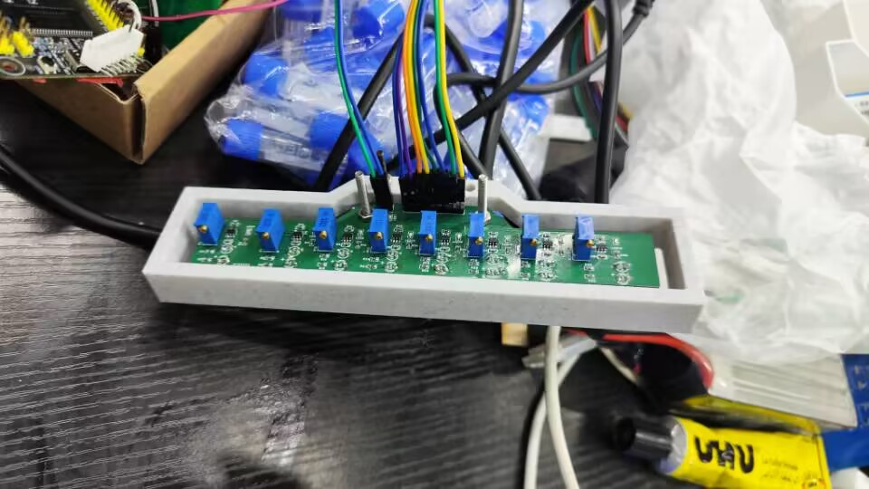

本项目设计并实现了一套自动循迹小车系统，核心创新在于自制八通道红外检测模块 并在两种异构处理器（STC89C52RC 51 单片机 与 EP4CE10F17C8N FPGA）上 分别实现循迹控制算法，对比分析两种方案的实时性与抗干扰能力。 小车采用 L298N 双 H 桥驱动两路直流电机，通过差速转向跟踪地面黑色引导线。
系统由三部分组成：感知层（八通道红外模块）、决策层（MCU / FPGA）与执行层（L298N + 电机）。 红外模块安装于车体前方，距地面约 15 mm，等间距排列 8 个红外收发对管， 通过模拟比较器输出数字信号（1 = 检测到黑线，0 = 白色地面）。 决策层根据 8-bit 检测向量输出左右电机的 PWM 占空比与方向。
商用循迹模块通常仅提供 3–5 通道，在急弯处易丢线。 本项目自行设计 PCB，排列 8 路 TCRT5000 红外反射传感器，间距 10 mm， 检测宽度覆盖约 80 mm。每路独立配置比较器（LM393）， 支持电位器调节阈值以适应不同地面材质。 外壳采用 3D 打印（PLA 材质），固定于车身前方横梁上。

STC89C52RC，8051 内核，11.0592 MHz 晶振，8 位 I/O 口直接读取红外模块的 8-bit 数字输出。 P1 口接红外模块，P2 口输出至 L298N 使能与方向引脚。
将 8-bit 检测向量映射为转向动作。采用查表法：预先定义每种检测模式对应的左右电机速度。 例如：
| 检测向量 | 含义 | 左电机 | 右电机 |
|---|---|---|---|
0001_1000 | 黑线居中 | 100% | 100% |
0000_0100 | 偏右 | 60% | 100% |
0010_0000 | 偏左 | 100% | 60% |
1000_0000 | 大幅偏左 | 100% | 0%（原地转） |
0000_0001 | 大幅偏右 | 0% | 100% |
0000_0000 | 丢线 | 按上次方向原地旋转 | |
PWM 通过软件定时器（Timer0 中断）在 I/O 口模拟输出，频率约 1 kHz。
sbit in8=P0^0; sbit in7=P0^1; sbit in6=P0^2; sbit in5=P0^3;
sbit in4=P0^4; sbit in3=P0^5; sbit in2=P0^6; sbit in1=P0^7;
/* 电机控制：speed(0-100), angel(0-180), direction(方向) */
void car_run(unsigned char speed, unsigned char angel,
unsigned char direction) {
switch (direction) {
case 1: min1=1; min2=0; min3=1; min4=0; break; // 前进
case 2: min1=0; min2=1; min3=0; min4=1; break; // 后退
case 3: min1=0; min2=0; min3=1; min4=0; break; // 左转
case 4: min1=1; min2=0; min3=0; min4=0; break; // 右转
case 0: min1=1; min2=1; min3=1; min4=1; break; // 刹车
}
compare_m = speed % 100; // 电机 PWM 占空比
compare_dir = (angel / 18) + 10; // 舵机 PWM 占空比
}
void main() {
timer0_init(); timer1_init();
car_run(0, 90, 0); // 初始停止
while (1) {
value = P0;
if (in4==1 || in5==1) car_run(60, 90, 1); // 居中 → 直行
else if (in3==1) car_run(60, 75, 3); // 微左偏 → 小左转
else if (in2==1) car_run(60, 60, 3); // 左偏 → 中左转
else if (in1==1) { car_run(50, 40, 3); // 大左偏 → 急左转
car_delay(30); }
else if (in6==1) car_run(60,115, 4); // 微右偏 → 小右转
else if (in7==1) car_run(50,130, 4); // 右偏 → 中右转
else if (in8==1) { car_run(50,165, 4); // 大右偏 → 急右转
car_delay(30); }
else if (value == 0x00) { // 丢线 → 倒车恢复
car_run(30, 180-last_dir, 2);
car_back_delay(50);
}
}
}
/* Timer0 中断: 0.1ms 周期, 模拟舵机 PWM (周期 20ms) */
void Timer0_Routine() interrupt 1 {
counter_dir = (counter_dir + 1) % 200;
motor_dir = (counter_dir < compare_dir) ? 1 : 0;
}
/* Timer1 中断: 0.1ms 周期, 模拟电机 PWM (周期 10ms) */
void Timer1_Routine() interrupt 3 {
counter_m = (counter_m + 1) % 100;
motor_m = motor_mm = (counter_m < compare_m) ? 1 : 0;
}
EP4CE10F17C8N（Altera Cyclone IV），配置 50 MHz 时钟。 8-bit 红外输入接 GPIO，PWM 与方向信号输出至 L298N。
循迹逻辑以纯组合逻辑实现，无需中断概念。8-bit 输入经 CASE-WHEN
语句直接映射为左右电机的 PWM 占空比（8-bit 无符号数表示 0–255）
与方向信号。所有逻辑在一个时钟周期（20 ns）内完成——远优于 51 单片机的毫秒级响应。
entity car_tracking is
generic(
cnt_meta : integer := 1000000;
ForWard : std_logic_vector(3 downto 0) := "1001";
Back : std_logic_vector(3 downto 0) := "0110";
dir_straight: integer := 75
);
port(
sys_clk, sys_rst_n : in std_logic;
infrared : in std_logic_vector(7 downto 0);
en_left, en_right : out std_logic;
motor : buffer std_logic_vector(3 downto 0);
dir : out std_logic
);
end car_tracking;
-- p2: PWM 输出进程 (电机 + 舵机)
p2 : process(sys_clk, sys_rst_n)
begin
if (sys_rst_n = '0') then
en_left <= '0'; en_right <= '0';
elsif rising_edge(sys_clk) then
en_left <= '1' when cnt < (cnt_meta/100)*duty_left else '0';
en_right <= '1' when cnt < (cnt_meta/100)*duty_right else '0';
dir <= '1' when cnt < (cnt_meta/1000)*duty_dir else '0';
end if;
end process p2;
-- p3: 红外→电机映射 (含延时防抖与丢线倒车)
p3 : process(infrared, sys_clk)
begin
if rising_edge(sys_clk) then
if delay > 0 then
if unsigned(infrared and mask) /= 0 then delay <= 0;
else delay <= delay - 1;
end if;
else
if infrared(0)='1' then -- 最右侧检测到 → 大右转
motor<=ForWard; duty_dir<=100; duty_left<=40; duty_right<=5;
mask<="00000111"; delay<=15000000; -- 300ms 延时屏蔽
elsif infrared(7)='1' then -- 最左侧检测到 → 大左转
motor<=ForWard; duty_dir<=55; duty_left<=7; duty_right<=40;
mask<="11100000"; delay<=15000000;
elsif infrared(3)='1' or infrared(4)='1' then -- 居中 → 直行
motor<=ForWard; duty_dir<=dir_straight;
duty_left<=50; duty_right<=50;
elsif unsigned(infrared)=0 then -- 全部丢线 → 倒车
if back_counter > back_period then
motor <= Back; duty_left<=30; duty_right<=30;
else back_counter <= back_counter + 1;
end if;
end if;
end if;
end if;
end process p3;
FPGA 方案的一个系统性创新是引入防抖计数器：传感器输出在黑白边界处可能产生抖动。 为每个通道设置一个 4-bit 计数器，仅当连续 N 个时钟周期（N=8，即 160 ns） 读到相同电平时才更新该通道的有效值。该方法有效抑制了因地面纹理或灯光反射引起的误触发。
| 指标 | 51 单片机 (C) | FPGA (VHDL) |
|---|---|---|
| 响应延迟 | ~1 ms（Timer 中断周期） | ~20 ns（1 时钟周期） |
| PWM 频率 | ~1 kHz（软件模拟） | ~20 kHz（硬件计数器） |
| 抗抖动 | 软件延时采样 | 硬件防抖计数器（确定延迟） |
| 开发效率 | 高（C 语言，调试方便） | 较低（HDL 仿真周期长） |
| 资源占用 | ROM ~2 KB | ~200 LEs（<2% 容量） |
| 急弯表现 | 偶尔丢线后恢复较慢 | 基本不丢线 |
L298N 是经典双 H 桥驱动芯片，支持双路直流电机独立控制。 每路通过 IN1/IN2 设置正反转方向，ENA 输入 PWM 控制转速。 工作电压 7–12 V，每路最大输出 2A。驱动板板载 5V 稳压器，可向单片机/FPGA 供电。